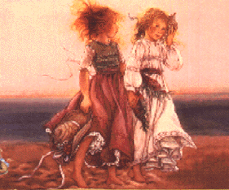

KINDRED HEARTS DO PART
~Martha Linbo-Terhaar
A lover banished once for stealing a kiss
From his loyal, fairhaired miss -
Shall a kindred one be vanquished, too
For stealing the heart of friendship true?
Waiting patiently, the author weeps
Hoping one day this friendship creeps.
Having many, having none,
Waiting, waiting, will it e'er be done?
None so patient did ever live.
None so true a gift did another give
As she did give the writer gray.
A gift only one as patient
Could give that day.
The poet thanked the fates with heart
Until the day came that they must part
Then those blessed were hexed and cursed.
And with remorse, through lips tightly pursed
The first watcher, with fear of the unforseen
Bid adieu to the fair Kathleen.
And as the distance between them grew,
The pain of loneliness amounted, too.
Yet a ray of optimism in the pessimistic heart
Enable both to make a fresh start
But both truly wanted and both truly missed,
Yet thanked the weavers of the fates
For their brows had been friendship kissed.